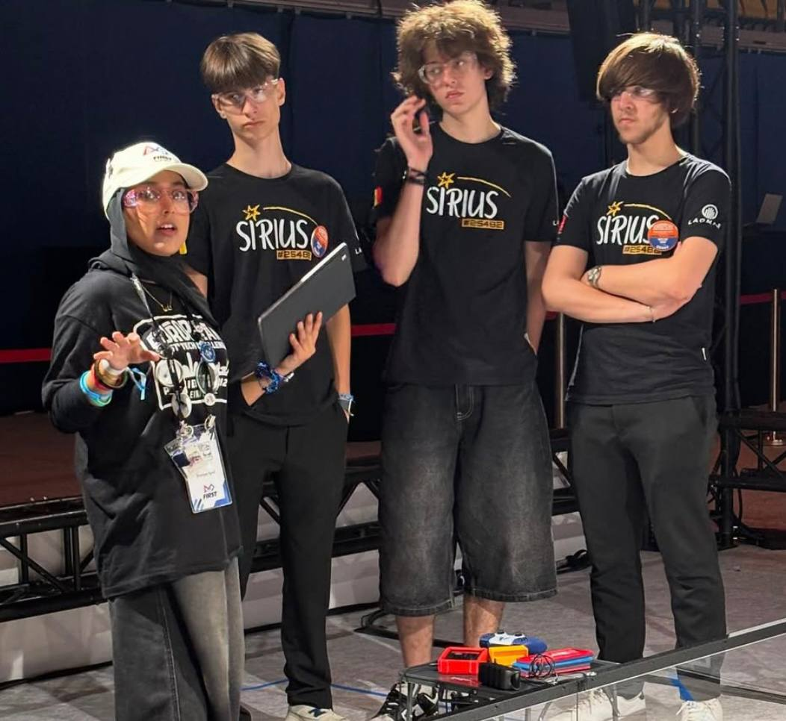
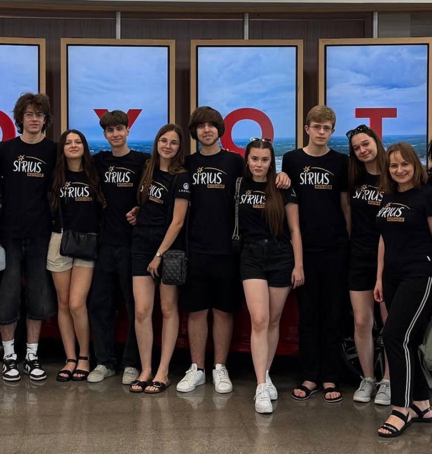

Hi, I’m Sebastian Babin—a Software Technology Engineering student at VIA University College with a strong passion for robotics, programming, and hands-on problem-solving. With a background in competitive robotics—including leading the "Sirius" robotics team and earning international awards in FTC and FLL—I thrive in collaborative environments that demand technical precision and creative engineering. I enjoy turning complex challenges into working solutions, whether through software development, C++, Java, or web technologies.
Hobbys
- Robotics
- Billiard
- 3D Design & Printing
- Arduino
- PC Games
About Robotics
Driven by the intersection of creative engineering and real-time problem-solving, I spent 7 years with the "Sirius" High School Robotics Team. As Team Captain, I led our team through complex mechanical design, software development, and high-stakes international competitions
Achievements
- 🏆 1st Place (Robot Design) – FLL Open European Championships (Norway)
- 🏆 1st Place (Champion’s Award) – National FLL Moldova
- 🥇 Winning Alliance – National FTC Championship Moldova
- 🥈 Finalist Alliance – FTC European Premier Event (Eindhoven, Netherlands) & FTC Italy Championship
- 🏅 Judges Award – FTC Premier Event (Lexington, KY, USA)


